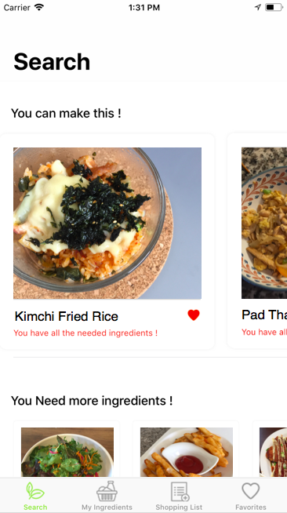
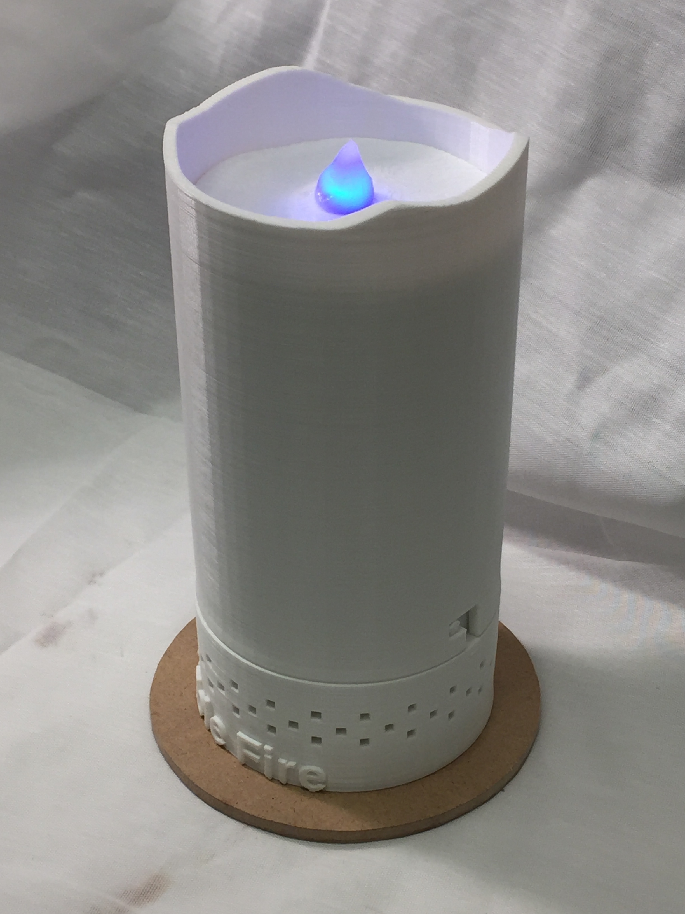

Eat is an iOS application that produces a list of potential recipes based on a list of ingredients
the user inputs into the app. Filled with our personal favorite recipes. Developed in Swift and designed by college students, for college students.

Partnered with a rural house museum to construct a portable, candle-shaped object that uses RFID
technology to add an interactive aspect to the museum. The object was designed based on the needs of the museum, including limited
electricity, ease of use, portability, and the ability for the user to guide themselves through the museum without a tour guide. Currently being used in the museum!

My first website. Designed and coded completely in HTML, CSS, and Javascript. Features the personal projects recently worked on and the designs finished for organizations on campus